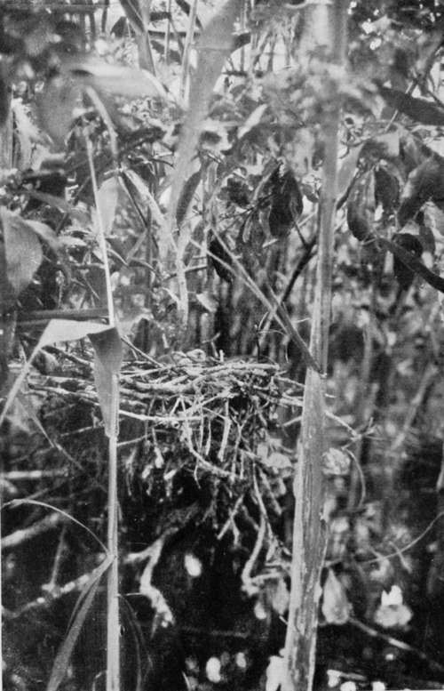
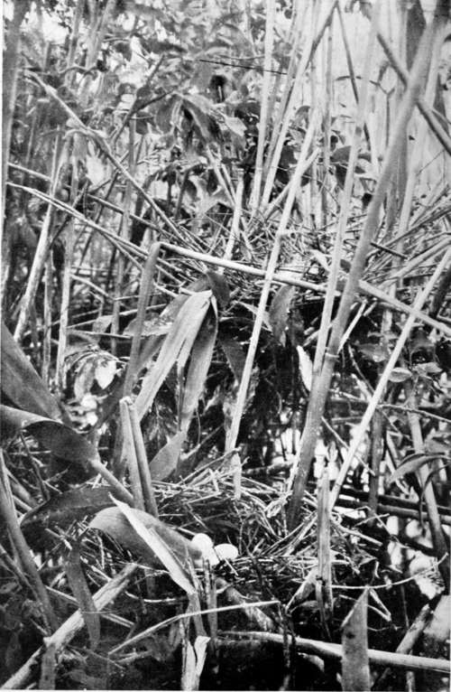

Collecting In The Dobrudscha. Part 11
Description
This section is from the book "Bird-Hunting Through Wild Europe", by R. B. Lodge. Also available from Amazon: Bird-Hunting Through Wild Europe.
Collecting In The Dobrudscha. Part 11
We had also expected to collect some larvae of the moth Laelia caenosa, of which I had seen such numbers in the previous year ; and in this we were not disappointed. We found about a hundred of them on reeds, and brought them back bottled up in hollow reed-stems. They were still small, and are fond of hanging on the extreme tip of a pendant reed-leaf when at rest. Some were very pale, almost whitish in colour; others bright yellow. These are possibly male and female. Later, as they grew larger, they became more brilliant in colour, and were really very beautiful objects.
By this time my room had acquired the typical characteristics of the abode of a naturalist. Every available space was littered up with boxes of eggs, and eggs waiting to be blown, birds waiting to be skinned, and trays of skins drying on the bed. There was a live Purple Heron tethered to the leg of the table, a skin of a Black Vulture on the floor, cameras, tripods, guns, rifle, bandoliers of cartridges, tins of arsenic, boxes of caterpillars, et hoc genus omne; while a Great Bustard and a Bittern looked down from the walls, and a wolf-skin served as a carpet in front of the bed.
On the 5th of June we started on an exploring expedition after Pelecanus onocrotalus, this time saying nothing about it to the authorities. Rettig was not in good odour with the officials, as there existed some jealousy between him and the naturalist at the museum, and the Government had treated him very badly over the exhibition, for which they had commissioned him to supply a collection of birds and beasts. Not only did he receive no payment, but he was unable to obtain the specimens at its close ; and in one way or another there was a good deal of friction. I had found out, too, that since I had associated myself with him the fishery administration officials were not so cordial, and though they promised their assistance nothing seemed to be forthcoming from them. So we quietly went off one day provided with my written permission from last year which they had promised to renew but had not.
First of all we hired Andreas again, and his wagon, and drove through Mahmoudie, where I was last year, to a village named Merigol (both Turkish names). From this place we engaged a couple of fishermen and two small lodkas. These were mere canoes ; in each there was barely room for two persons, without any luggage. But cameras had to be taken, also sleeping-rugs, food, cooking pots, materials and tools for preserving skins, and guns. These required careful stowing to get in at all, and everything else was left behind. No brushes or combs, no knives and forks or plates, only a big spoon each, two mugs, ten huge loaves, an iron pot, and onions, olives, sugar, salt, and tea.
Nest Of Pigmy Cormorant (Phalacrocorax Pygmeus)
With these scanty stores we pushed off into the watery wilderness, known as the Balta, for a week, during which time we never entered a roof or a bed, but slept on the ground wherever we happened to be-or rather, where we could find any ground solid enough to sleep on, which was not always an easy matter-and depended upon our guns and the fish we could get from the nets we passed on our way.
All my other expeditions have been luxurious in comparison with this one, but I must say it was from start to finish most enjoyable. I became quite an adept at eating with my fingers, without plate, or knife, or fork, such difficult foods as boiled fish, and could enjoy my food under the very roughest conditions. Some days we shot ducks, or took Coots' eggs, and of fish we had the best-Carp, Danube Salmon, Fresh-water Herrings, and so on. It seems to be the custom to help yourself from a set net, but only enough for the present needs. Naturally enough, however, when overhauling a drum-net for our dinner-pot we did not leave the best fish behind us. Our drink was Danube water scooped up in the boat's baler, or sucked up through a reed, and tea made by boiling a handful of tea in the same iron pot which had just cooked the fish. This was just rinsed out, leaving the tea rather fishy from the globules of fish-oil floating on the top. Our cooking was done with reeds. This is the only fuel used throughout the Dobrudscha. They give out a great heat, but burn quickly. One of the paddles being stuck into the ground at an angle, the big pot was suspended from the upper end, and a double handful of dry reeds lighted under it. This is pushed forwards as it burns away, and replaced with others when finished. Without reeds the people here could hardly exist, they are useful for such a variety of purposes. Like the fish, they are a Government monopoly, and every household pays a tax of about IIS. a year for the privilege of cutting or buying as many reeds as they like. Each house has its reed-stack outside in some convenient place, big enough to supply its needs for the winter.
The cold here during the winter months is excessive. The ice forms on the Danube to the depth of six feet, and the snow is also many feet deep.
Nest Of Night Heron (Top) Nest Of Squacco Heron (Below)
The houses are all thatched with reeds, the fences and fish-traps being also always made of the same material. The cows and horses are fed on the green leaves, while the young and tender shoots are boiled for human food. They are even trying, so I heard, to make paper from reeds. If they can succeed in this -and it seems to me quite feasible-the manufacture should be a profitable one.
We had not gone very far on our first day's journey when Rettig, who was in advance with Ivan, fell in with a flock of Caspian Terns (Sterna caspta), and got four of them. Later in the afternoon we found a big colony of Squacco Herons (Ardea rallloides), Night Herons (Nycticorax gri-seus), and Pygmy Cormorants (Phalacrocorax pyg-meus), in a thicket of half-submerged sallows. The slender bushes were crowded with nests, and the stench was, as usual, terrific. As our boats were forced through the thickly-matted bushes the terrified birds flew around in the greatest confusion and alarm.
Continue to:
- prev: Collecting In The Dobrudscha. Part 10
- Table of Contents
- next: Collecting In The Dobrudscha. Part 12